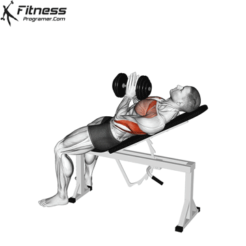

The Close-Grip Incline Dumbbell Press, also known as the Incline Crush Press or Incline Squeeze Press, is a variation of the incline bench press. It involves using dumbbells with a close grip, typically with your palms facing each other. This exercise can be done with either a single dumbbell or two dumbbells.
HOW TO DO:
- Set Up: Adjust an inclined bench to your preferred angle, typically between 30-45 degrees. Sit on the bench with your back firmly against it.
- Grip: Hold a single dumbbell with both hands, positioning it close to your chest. Your palms should face each other, and your hands should be shoulder-width apart.
- Positioning: Plant your feet flat on the ground for stability. Slightly arch your lower back while maintaining contact with the bench. Keep your head, shoulders, and glutes in contact with the bench throughout the exercise.
- Press: Push the dumbbell upward until your arm is fully extended, but do not lock out your elbow. Exhale during the pressing phase.
- Lower: Lower the dumbbell with control to your upper chest while inhaling. Keep your elbows at a 90-degree angle or slightly less.
- Repeat for your desired number of repetitions.
TIPS FOR SUCCESS:
- Begin with a light to moderate weight to ensure proper form and balance.
- Focus on a controlled and deliberate movement throughout the exercise.
- Avoid jerky or rapid motions; maintain tension on your chest muscles.
- Incorporate this exercise into your upper body or chest workout routine once or twice a week.
BENEFITS
- Upper Chest Development: This exercise places greater emphasis on the upper chest, helping to create a well-balanced and aesthetically pleasing chest.
- Enhanced Muscle Activation: The close-grip position engages the upper chest fibers effectively, leading to greater muscle activation and growth.
- Improved Strength: As a compound movement, this exercise not only builds muscle but also contributes to increased upper body strength.
MUSCLES WORKED
- Chest
- triceps
- Shoulders